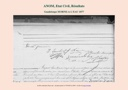

Genealogie_Complete
Graphique personnel
Parents
| Père | Date de naissance | Mère | Date de naissance |
|---|---|---|---|
 Jean Dit Pio FERBAC Jean Dit Pio FERBAC |
1808 |  Victoire BOUCHEMAN (FERBAC BOUCHEMAN) Victoire BOUCHEMAN (FERBAC BOUCHEMAN) |
1820 |
Conjoints
| Conjoint | Date de naissance | Enfants |
|---|---|---|
| Marie-Mathilda BADOF (FERBAC) |
12 févr. 1853 | Nathalie Laure FERBACJean FERBACAnathilde Ocatavie FERBACLydie Anastasie FERBAC BOUCHEMANDidier FERBAC |
Événements personnels
| Type d’événement | Date | Lieu | Description |
|---|---|---|---|
 Naissance Naissance |
1845 | Morne-à-l'Eau, Guadeloupe, Guadeloupe, FRANCE | |
| "Choix du Nom" : Inscription sur registre d'État Civil |
01 déc. 1858 | Labuthie, Guadeloupe, Guadeloupe, FRANCE | n° 2944 |
| Mariage |
11 août 1877 | Morne-à-l'Eau, Guadeloupe, Guadeloupe, FRANCE | |
| Profession |
Cultivateur |
Notes
| N°2944 et a 3 ans sur le registre avec sa mère |
Médias

Mariage Jean-Louis Ferbac Boucheman et Marie Mathilda Badof anom_20250517_234910